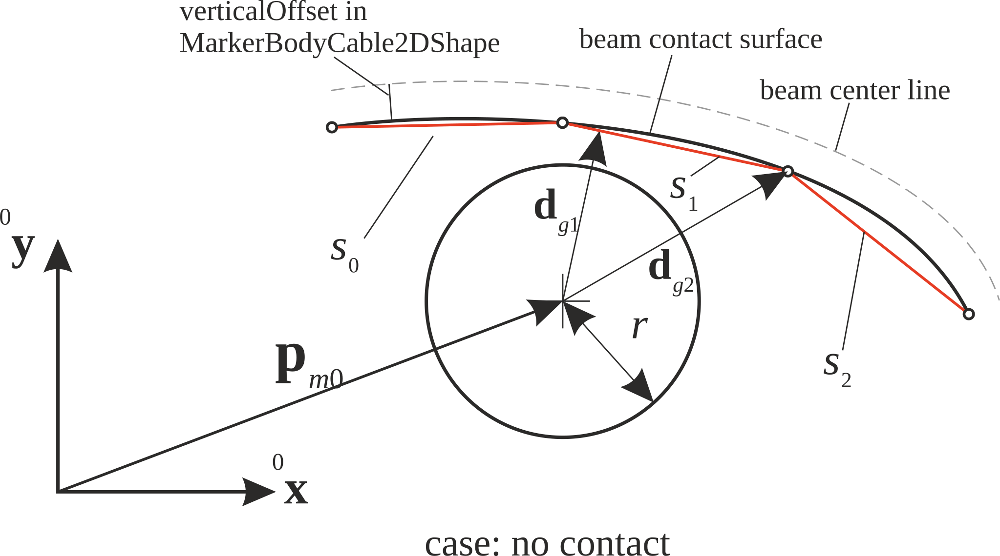
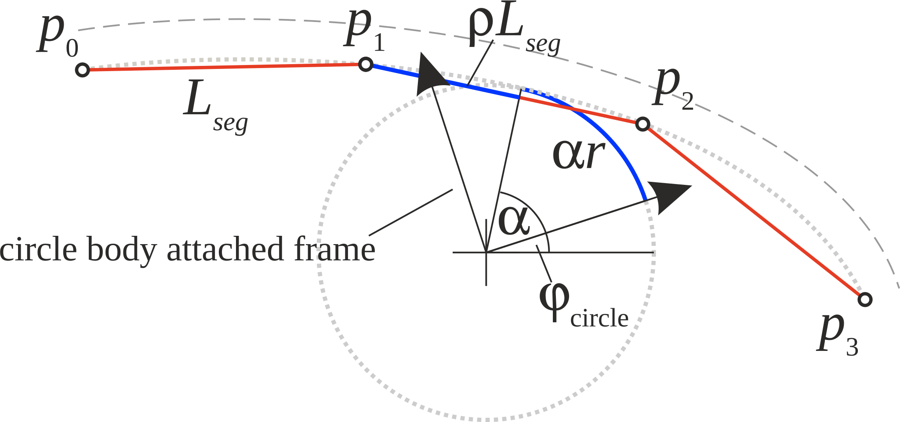
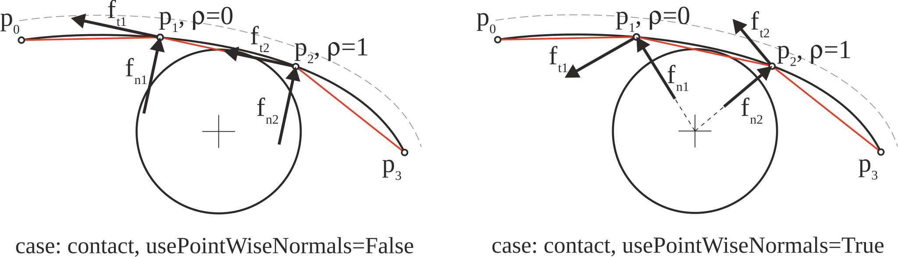

ObjectContactFrictionCircleCable2D
A very specialized penalty-based contact/friction condition between a 2D circle in the local x/y plane (=marker0, a RigidBody Marker, from node or object) on a body and an ANCFCable2DShape (=marker1, Marker: BodyCable2DShape), in xy-plane. A node NodeGenericData is required with 3\(\times\)(number of contact segments) – containing per segment: [contact gap, stick/slip (stick=0, slip=+-1, undefined=-2), last friction position]. The connector works with Cable2D and ALECable2D, HOWEVER, due to conceptual differences the (tangential) frictionStiffness cannot be used with ALECable2D; if using, it gives wrong tangential stresses, even though it may work in general.
Interface
Nodes it takes: NodeGenericData
Parameters
The parameters of the item; in a dictionary, its type is ‘ContactFrictionCircleCable2D’:
name |
type |
size |
default |
description |
|---|---|---|---|---|
name |
String |
‘’ |
connector’s unique name |
|
markerNumbers |
ArrayMarkerIndex |
[ invalid (-1), invalid (-1) ] |
(symbol: \([m0,m1]\tp\)) a marker \(m0\) with position and orientation and a marker \(m1\) of type BodyCable2DShape; together defining the contact geometry |
|
nodeNumber |
NodeIndex |
invalid (-1) |
(symbol: \(n_g\)) node number of a NodeGenericData with 3 \(\times n_{cs}\) dataCoordinates (used for active set strategy \(\ra\) hold the gap of the last discontinuous iteration, friction state (+-1=slip, 0=stick, -2=undefined) and the last sticking position; initialize coordinates with list [0.1]\(n_{cs}\)+[-2]\(n_{cs}\)+[0.]*\(n_{cs}\), meaning that there is no initial contact with undefined slip/stick |
|
numberOfContactSegments |
PInt |
3 |
(symbol: \(n_{cs}\)) number of linear contact segments to determine contact; each segment is a line and is associated to a data (history) variable; must be same as in according marker |
|
contactStiffness |
UReal |
0. |
(symbol: \(k_c\)) contact (penalty) stiffness [SI:N/m/(contact segment)]; the stiffness is per contact segment; specific contact forces (per length) \(f_n\) act in contact normal direction only upon penetration |
|
contactDamping |
UReal |
0. |
(symbol: \(d_c\)) contact damping [SI:N/(m s)/(contact segment)]; the damping is per contact segment; acts in contact normal direction only upon penetration |
|
frictionVelocityPenalty |
UReal |
0. |
(symbol: \(\mu_v\)) tangential velocity dependent penalty coefficient for friction [SI:N/(m s)/(contact segment)]; the coefficient causes tangential (contact) forces against relative tangential velocities in the contact area |
|
frictionStiffness |
UReal |
0. |
(symbol: \(\mu_k\)) tangential displacement dependent penalty/stiffness coefficient for friction [SI:N/m/(contact segment)]; the coefficient causes tangential (contact) forces against relative tangential displacements in the contact area |
|
frictionCoefficient |
UReal |
0. |
(symbol: \(\mu\)) friction coefficient [SI: 1]; tangential specific friction forces (per length) \(f_t\) must fulfill the condition \(f_t \le \mu f_n\) |
|
circleRadius |
UReal |
0. |
(symbol: \(r\)) radius [SI:m] of contact circle |
|
useSegmentNormals |
Bool |
True |
True: use normal and tangent according to linear segment; this is appropriate for very long (compared to circle) segments; False: use normals at segment points according to vector to circle center; this is more consistent for short segments, as forces are only applied in beam tangent and normal direction |
|
activeConnector |
Bool |
True |
flag, which determines, if the connector is active; used to deactivate (temporarily) a connector or constraint |
|
visualization |
VObjectContactFrictionCircleCable2D |
parameters for visualization of item |
Visualization parameters
The parameters of VObjectContactFrictionCircleCable2D, given as visualization:
name |
type |
size |
default |
description |
|---|---|---|---|---|
show |
Bool |
True |
set True, if item is shown in visualization and false if it is not shown; note that only normal contact forces can be drawn, which are approximated by \(k_c \cdot g\) (neglecting damping term) |
|
showContactCircle |
Bool |
True |
if True and show=True, the underlying contact circle is shown; uses circleTiling*4 for tiling (from VisualizationSettings.general) |
|
drawSize |
float |
-1. |
drawing size = diameter of spring; size == -1.f means that default connector size is used |
|
color |
Float4 |
4 |
[-1.,-1.,-1.,-1.] |
RGBA connector color; if R==-1, use default color |
Drawing
Drawn as all connectors; with connectors.showContact, the circle (showContactCircle, 4 times general.circleTiling segments), the contact points of the cable, colored by stick and slip, and with contact.showContactForces the contact forces.
Settings beyond those of all connectors: connectors.showContact, contact.contactForcesFactor, contact.contactPointsDefaultSize, contact.showContactForces, contact.showContactForcesValues, general.circleTiling, general.rendererPrecision.
Output variables
Available as OutputVariableType in sensors, Get...Output() and other functions:
output variable |
symbol |
description |
|---|---|---|
Coordinates |
\([u_{t,0},\, g_0,\, u_{t,1},\, g_1,\, \ldots,\, u_{t,n_{cs}},\, g_{n_{cs}}]\tp\) |
local (relative) displacement in tangential (\(\tv\)) and normal (\(\nv\)) direction per segment (\(n_{cs}\)); values are only provided in case of contact, otherwise zero; tangential displacement is only non-zero in case of sticking! |
Coordinates_t |
\([v_{t,0},\, v_{n,0},\, v_{t,1},\, v_{n,1},\, \ldots,\, v_{t,n_{cs}},\, v_{n,n_{cs}}]\tp\) |
local (relative) velocity in tangential (\(\tv\)) and normal (\(\nv\)) direction per segment (\(n_{cs}\)); values are only provided in case of contact, otherwise zero |
ForceLocal |
\([f_{t,0},\, f_{n,0},\, f_{t,1},\, f_{n,1},\, \ldots,\, f_{t,n_{cs}},\, f_{n,n_{cs}}]\tp\) |
local contact forces in tangential (\(\tv\)) and normal (\(\nv\)) direction per segment (\(n_{cs}\)) |
Detailed description
Definition of quantities
intermediate variables |
symbol |
description |
|---|---|---|
marker m0 position |
\(\LU{0}{\pv}_{m0}\) |
represents current global position of the circle’s centerpoint |
marker m0 velocity |
\(\LU{0}{\vv}_{m0}\) |
current global velocity which is provided by marker m0 |
marker m1 |
represents the 2D ANCF cable |
|
data node |
\(\xv=[x_{i},\; \ldots,\; x_{3 n_{cs} -1}]\tp\) |
coordinates of node with node number \(n_{GD}\) |
data coordinates for segment \(i\) |
\([x_i,\, x_{n_{cs}+ i},\, x_{2\cdot n_{cs}+ i}]\tp = [x_{gap},\, x_{isSlipStick},\, x_{lastStick}]\tp\), with \(i \in [0,n_{cs}-1]\) |
The data coordinates include the gap \(x_{gap}\), the stick-slip state \(x_{isSlipStick}\) and the previous sticking position \(x_{lastStick}\) as computed in the PostNewtonStep, see description below. |
shortest distance to segment \(s_i\) |
\(\dv_{g,i}\) |
shortest distance of center of circle to contact segment, considering the endpoint of the segment |


Fig. 40 Sketch of cable, contact segments and circle; showing case without contact, \(|\mathbf{d}_{g1}| > r\), while contact occurs with \(|\mathbf{d}_{g1}| \le r\); the shortest distance vector \(\mathbf{d}_{g1}\) is related to segment \(s_1\) (which is perpendicular to the the segment line) and \(\mathbf{d}_{g2}\) is the shortest distance to the end point of segment \(s_2\), not being perpendicular
Connector forces: contact geometry
The connector represents a force element between a ‘circle’ (or cylinder) represented by a marker \(m0\), which has position and orientation,
and an ANCFCable2D beam element (denoted as ‘cable’) represented by a MarkerBodyCable2DShape \(m1\).
The cable with reference length \(L\) is discretized by splitting into \(n_{cs}\) straight segments \(s_i\), located between points \(p_i\) and \(p_{i+1}\).
Note that these points can be placed with an offset from the cable centerline, see verticalOffset defined in MarkerBodyCable2DShape.
In order to compute the gap function for a line segment, the shortest distance of one line segment with
points \(\pv_i\), \(\pv_{i+1}\) to the circle’s centerpoint given by the marker \(\pv_{m0}\) is computed.
All computations here are performed in the global coordinates system (0),
including edge points of every segment.
With the intermediate quantities (all of them related to segment \(s_i\)) (we omit \(s_i\) in some terms for brevity!),
and assuming that \(d \neq 0\) (otherwise the two segment points would be identical and the shortest distance would be \(d_g = |\vv_p|\)), we find the relative position \(\rho\) of the shortest (projected) point on the segment, which runs from 0 to 1 if lying on the segment, as
We distinguish 3 cases (see also Fig. 40 for cases 1 and 2):
If \(\rho \le 0\), the shortest distance would be the distance to point \(\pv_p=\pv_i\), reading
If \(\rho \ge 1\), the shortest distance would be the distance to point \(\pv_p=\pv_{i+1}\), reading
Finally, if \(0 < \rho < 1\), then the shortest distance has a projected point somewhere on the segment with the point (projected on the segment)
and the distance
Here, the shortest distance vector for every segment results from the projected point \(\pv_p\) of the above mentioned cases, see also Fig. 40, with the relation
The contact gap for a specific point for segment \(s_i\) is in general defined as
using \(d_g = |\dv_g|\).
Contact frame and relative motion
Irrespective of the choice of useSegmentNormals, the contact normal vector \(\nv_{s_i}\) and tangential vector \(\tv_{s_i}\) are defined per segment as
The vectors \(\tv_{s_i}\) and \(\nv_{s_i}\) define the local (contact) frame for further computations.
The velocity at the closest point of the segment \(s_i\) is interpolated using \(\rho\) and computed as
Alternatively, \(\dot \pv_p\) could be computed from the cable element by evaluating the velocity at the contact points, but we feel that this choice is more consistent with the computations at position level.
The gap velocity \(v_n\) (\(\neq \dot g\)) thus reads
In a similar, the tangential velocity reads
In case of frictionStiffness != 0, we continuously track the sticking position at which the cable element (or segment) and the circle
previously sticked together, similar as proposed by Lugr{‘i}s et al.~LugrisEscalonaDC2011.
The difference here to the latter reference, is that we explicitly exclude switching from Newton’s method and that Lugr{‘i}s et al.~used
contact points, while we use linear segments.
For a simple 1D example using this position based approach for friction, see Examples/lugreFrictionText.py,
which compares the traditional LuGre friction model CanudasDeWitEtAl1993 with the position based model with tangential stiffness.


Fig. 41 Calculation of last sticking position; blue parts mark the sticking position calculated as \(x^*_{curStick}\).
Because there is the chance to wind/unwind relative to the (last) sticking position without slipping, the following strategy is used. In case of sliding (which could be the last time sliding before sticking), we compute the current sticking position, see Fig. 41, as the sum of the relative position at the segment \(s\)
in which \(\rho \in [0,1]\) denotes the relative position of contact at the segment with reference length \(L_{seg}=\frac{L}{n_{cs}}\). The relative position at the circle \(c\) is
We immediately see, that under pure rolling (neglecting the effects of small penetration, usually much smaller than shown for visibility in Fig. 41.),
Note that the verticalOffset from the cable center line, as defined in the related MarkerBodyCable2DShape,
influences the behavior significantly, which is why we recommend to use verticalOffset=0 whenever this is an
appropriate assumption.
Thus, the current sticking position \(x_{curStick}\) is computed per segment as
Due to the possibility of switching of \(\alpha+\phi\) between \(-\pi\) and \(\pi\), the result is normalized to
which gives \(\bar x_{curStick} \in [-\pi \cdot r,\pi \cdot r]\), which is stored in the 3rd data variable (per segment).
The function floor() is a standardized version of rounding, available in C and Python programming languages.
In the PostNewtonStep, the last sticking position is computed, \(x_{lastStick} = x_{curStick}\), and it is also available in the startOfStep state.
Contact forces: definition
The contact force \(f_n\) is zero for \(g > 0\) and otherwise computed from
NOTE that currently, there is only a linear spring-damper model available, assuming that the impact dynamics is not dominating (such as in belt drives or reeving systems).
Friction forces are primarily based on relative (tangential) velocity at each segment. The ‘linear’ friction force, based on the velocity penalty parameter \(\mu_v\) reads
Post Newton Step
In general, see the solver flow chart for the DiscontinuousIteration, see Fig. 33, should be considered when reading this description. Every step is started with values startOfStep, while current values are iterated and updated in the Newton or DiscontinuousIteration.
The PostNewtonStep computes 3 values per segment, which are used for computation of contact forces, irrespectively of the
current geometryof the contact.
The PostNewtonStep is called after every full Newton method and evaluates the current state w.r.t. the assumed data variables.
If the assumptions do not fit, new data variables are computed.
This is necessary in order to avoid discontinuities in the equations, while otherwise the Newton iterations would not
(or only slowly) converge.
The data variables per segment are
Here, \(x_{gap}\) contains the gap of the segment (\(\le 0\) means contact), \(x_{lastStick}\) is described in (83), and \(x_{isSlipStick}\) defines the stick or slip case,
\(x_{isSlipStick} = -2\): undefined, used for initialization
\(x_{isSlipStick} = 0\): sticking
\(x_{isSlipStick} = \pm 1\): slipping, sign defines slipping direction
The basic algorithm in the PostNewtonStep, with all operations given for any segment \(s_i\), can be summarized as follows:
Evaluate gap per segment \(g\) using (80) and store in data variable: \(x_{gap} = g\)
If \(x_{gap} < 0\) and (\(\mu_v \neq 0\) or \(\mu_k \neq 0\)):
Compute contact force \(f_n\) according to (84)
Compute current sticking position \(x_{curStick}\) according to (82) (terms are only evaluated if \(\mu_k \neq 0\))
Retrieve
startOfStepsticking position (Importantly, thePostNewtonStepalways refers to thestartOfStepstate in the sticking position, because in the discontinuous iterations, the algorithm could switch to slipping in between and override the last sticking position in the current step) in \(x^{startOfStep}_{lastStick}\) and compute and normalize difference in sticking position (in case that \(x_{isSlipStick} = -2\), meaning that there is no stored sticking position, we set \(\Delta x_{stick} = 0\)):
Compute linear tangential force for friction stiffness and velocity penalty:
Compute tangential force according to Coulomb friction model (note that the sign of \(\Delta x_{stick}\) is used here, but alternatively we may also use the sign of \(f_{t,lin}\)):
In the case of slipping, given by \(|f_t^{(lin)}| > \mu \cdot |f_n|\), we update the last sticking position in the data variable, such that the spring is pre-tensioned already,
In the case of sticking, given by \(|f_t^{(lin)}| \le \mu \cdot |f_n|\): Set \(x_{isSlipStick} = 0\) and, if \(x^{startOfStep}_{isSlipStick} = -2\) (undefined), we update \(x_{lastStick} = x_{curStick}\), while otherwise, \(x_{lastStick}\) is unchanged.
If \(x_{gap} > 0\) or (\(\mu_v == 0\) and \(\mu_k == 0\)), we set \(x_{isSlipStick} = -2\) (undefined); this means that in the next step (if this step is accepted), there is no stored sticking position.
Compute an error \(\varepsilon_{PNS} = \varepsilon^n_{PNS}+\varepsilon^t_{PNS}\), with physical units forces (per segment point), for
PostNewtonStep:
if gap \(x_{gap,lastPNS}\) of previous
PostNewtonStephad different sign to current gap, set
while otherwise \(\varepsilon^n_{PNS}=0\).
if stick-slip-state \(x_{isSlipStick,lastPNS}\) of previous
PostNewtonStepis different from current \(x_{isSlipStick}\), set
while otherwise \(\varepsilon^t_{PNS}=0\).
Note that the PostNewtonStep is iterated and the data variables are updated continuously until convergence, or until a max. number of iterations is reached. If ignoreMaxIterations == 0, computation will continue even if no convergence is reached after the given number of iterations. This will lead so larger errors in such steps, but may have less influence on the overall solution if such cases are rare.
Computation of connector forces in Newton
The computation of LHS terms, the action of forces produced by the contact-friction element, is done during Newton iterations and may not have
discontinuous behavior, thus relating computations to data variables computed in the PostNewtonStep.
For efficiency, the LHS computation is only performed, if the PostNewtonStep determined contact in any segment.
The operations are similar to the PostNewtonStep, but without switching. The following operations are performed for each segment \(s_i\), if
\(x_{gap, s_i} <= 0\):
Compute contact force \(f_n\), (84).
In case of sticking (\(|x_{isSlipStick}|\neq 1\)):
the current sticking position \(x_{curStick}\) is computed from (82), and the difference of current and last sticking position reads (see the difference to the
PostNewtonStep: we use \(x_{lastStick}\) here, not thestartOfStepvariant.):
if the friction stiffness is \(\mu_k==0\) or if \(x_{isSlipStick} == -2\), we set \(\Delta x_{stick}=0\)
using the tangential velocity from (81), the tangent force follows as (even if it is larger than the sticking limit)
In case of slipping (\(|x_{isSlipStick}|=1\)), the tangential firction force is set as (see again difference to
PostNewtonStep!),
Note that in the Newton method, the tangential force may be inconsistent with the Kuhn-Tucker conditions. However,
the PostNewtonStep resolves this inconsistency.
Computation of LHS terms for circle and ANCF cable element
If activeConnector = True,
contact forces \(\fv_i\) with \(i \in [0,n_{cs}]\) – these are \((n_{cs}+1)\) forces – are applied at the points \(p_i\), and they are computed for every contact segments (i.e., two segments may contribute to contact forces of one point).
For every contact computation, first all contact forces at segment points are set to zero.
We distinguish two cases SN and PWN. If useSegmentNormals==True, we use the SN case, while otherwise the PWN case is used,
compare Fig. 42.


Fig. 42 Choice of normals and tangent vectors for calculation of normal contact forces and tangential (friction) forces; note that the useSegmentNormals=False is not appropriate for this setup and would produce highly erroneous forces.
Segment normals (=SN) lead to always good approximations for normal directions, irrespectively of short or extremely long segments as compared to the circle. However, in case of segments that are short as compared to the circle radius, normals computed from the center of the circle to the segment points (=PWN) are more consistent and produce tangents only in circumferential direction, which may improve behavior in some applications. The equations for the two cases read:
CASE SN: use Segment Normals
If there is contact in a segment \(s_i\), i.e., gap state \(x_{gap} \le 0\), see Fig. 40(right), contact forces \(\fv_{s_i}\) are computed per segment,
and added to every force at segment points according to
while in case \(x_{gap} > 0\) nothing is added.
CASE PWN: use Point Wise Normals (at segment points)
If there is contact in a segment \(s_i\), i.e., gap \(x_{gap} \le 0\), see Fig. 40(right), intermediate contact forces \(\fv^{l,r}_{i}\) are computed per segment point,
in which \(\nv_{l,s_i}\) is the vector from circle center to the left point (\(i\)) of the segment \(s_i\), and \(\nv_{l,s_i}\) to the right point (\(i+1\)). The tangent vectors are perpendicular to the normals.
The forces are then applied to the contact forces \(\fv_i\) using the parameter \(\rho\), which takes into account the distance of contact to the left or right side of the segment,
while in case \(x_{gap} > 0\) nothing is added.
The forces \(\fv_i\) are then applied through the marker to the ObjectANCFCable2D element as point loads via a position jacobian
(using the according access function), for details see the C++ implementation.
The forces on the circle marker \(m0\) are computed as the total sum of all segment contact forces,
and additional torques on the circle’s rotation simply follow from
During Newton iterations, the contact forces for segment \(s_i\) are considered only, if \(x_i <= 0\). The dataCoordinate \(x_i\) is not modified during Newton iterations, but computed during the DiscontinuousIteration, see Fig. 33 in the solver description.
If activeConnector = False, all contact and friction forces on the cable and the force and torque on the
circle’s marker are set to zero.
Mini example
from exudyn.beams import GenerateBeamElementsAlongLine
#contact with friction between a circle and an ANCF cable: a cantilever falls onto a circle
cable = ObjectANCFCable2D(massPerLength=1, bendingStiffness=10, axialStiffness=1e4,
bendingDamping=0.1)
beamInfo = GenerateBeamElementsAlongLine(mbs, positionStart=[0,0,0], positionEnd=[1,0,0],
numberOfElements=4, beamTemplate=cable, gravity=[0,-9.81,0],
groundConstraintsStart=[1,1,0,1])
nodes, elements = beamInfo['nodes'], beamInfo['elements']
mCircle = mbs.AddMarker(MarkerBodyRigid(bodyNumber=oGround, localPosition=[0.8,-0.2,0]))
nSegments = 4
for e in elements:
mShape = mbs.AddMarker(MarkerBodyCable2DShape(bodyNumber=e, numberOfSegments=nSegments))
nData = mbs.AddNode(NodeGenericData(numberOfDataCoordinates=3*nSegments,
initialCoordinates=[0.1]*nSegments+[0]*2*nSegments)) #gaps, friction states
mbs.AddObject(ObjectContactFrictionCircleCable2D(markerNumbers=[mCircle, mShape], nodeNumber=nData,
numberOfContactSegments=nSegments, circleRadius=0.1,
contactStiffness=1e4, contactDamping=10,
frictionVelocityPenalty=100, frictionCoefficient=0.5))
mbs.Assemble()
mbs.SolveDynamic()
#the tip rests beyond the circle, whose top is at y=-0.1
exu.sys['testResult'] = mbs.GetNodeOutput(nodes[-1], exu.OutputVariableType.Position)[1]
Relevant Examples (Ex) and TestModels (TM) with weblink to github: beltDriveALE.py (Ex), beltDriveReevingSystem.py (Ex), beltDrivesComparison.py (Ex), sliderCrank3DwithANCFbeltDrive.py (Ex), sliderCrank3DwithANCFbeltDrive2.py (Ex), ANCFcontactFrictionTest.py (TM), ANCFmovingRigidBodyTest.py (TM), ANCFslidingAndALEjointTest.py (TM), contactFrictionCircleCable2DnoFrictionTest.py (TM)